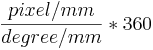

DSLR spherical resolution
Intro
In general photography megapixels are more or less synonymous to resulting image resolution. Panorama photography is a bit different, especially spherical panoramas. Here the sensor pixel density is more important than the sensor pixel count.
The Problem
Digital Single Lens Reflex (DSLR) cameras exist in four major groups:
- With FourThirds sensor (crop factor 2.0)
- With an APS-C type sensor (crop factor 1.5 or 1.6)
- With APS-H type sensor (crop factor 1.3)
- With a sensor of the full 35mm film size (crop factor 1.0)
In each size category there are several cameras with different sensor resolutions. And there are several lenses that can be attached to cameras with different sensor sizes. To have the effects of different lenses comparable the concept of a 35mm equivalent focal length has been established - the real focal length multiplied with the crop factor gives the same Field of View like for a 35mm film camera.
However, this is not possible for fisheye[*] lenses, since the Focal Length does not correspond linearly to the Field of View. One has to look at the degree/mm ratio and absolute pixel density instead.
Degree/mm
In the Fisheye Projection an angular distance from the optical axis maps to a linear distance on the sensor. The mapping is determined by the focal length (the following numbers are approximations, since real fisheyes almost never resemble the ideal fisheye mapping):
- 5.6mm focal length 11.4°/mm
- 8mm focal length 8°/mm
- 10.5mm focal length 6°/mm
- 16mm focal length 4°/mm
Pixel density
To deduce the pixel resolution obtainable by a certain sensor/lens combination we should know the density in pixels/mm of the respective sensor. The pixel density can be calculated roughly from the Megapixels (better would be actual pixel size) and the sensor size. For the three major groups and some typical Megapixel sizes:
FourThirds
with 13.5mm short side
Megapixel 6 8 10 12 Short side px 2121 2450 2739 3024 px/mm 157 181 203 232
APS-C
with 16mm short side
Megapixel 6 8 10 12 Short side px 2000 2309 2582 2828 px/mm 125 144 161 177
APS-H
with 19mm short side
Megapixel 8 10 16 Short side px 2336 2592 3264 px/mm 123 137 172
Full size
with 24mm short side
Megapixel 6 8 10 12 16 21 24 Short side px 2000 2309 2582 2828 3266 3742 4032 px/mm 83 96 108 118 136 156 168
Pano sizes
From the above values we can easily calculate some sample panorama resolutions. The table gives some rounded values for the maximum pixel size of an equirectangular:
FourThirds MP - - - - 6 7 8 10 12 APS-C MP - - 6 8 10 11 12 15 20 APS-H MP - - 8 10 - 16 - - - Full size MP 6 8 12 16 21 24 28 35 46 pixel/mm 80 100 120 140 160 170 180 200 230 f=5.6mm size 2520 3150 3780 4420 5050 5360 5680 6300 7260 f=8mm size 3600 4500 5400 6300 7200 7600 8100 9000 10350 f=10.5mm size 4800 6000 7200 8400 9600 10200 10800 12000 13800 f=16mm size 7200 9000 10800 12600 14400 15300 16200 18000 20700
The formula for an exact calculation is 
--Erik Krause[*] 22:11, 21 August 2007 (CEST)